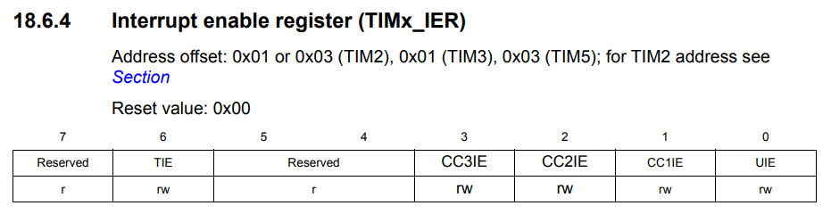
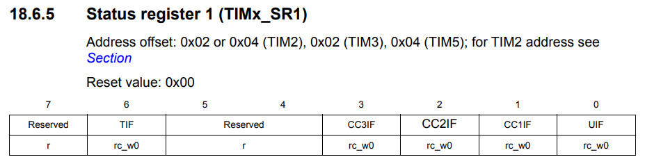
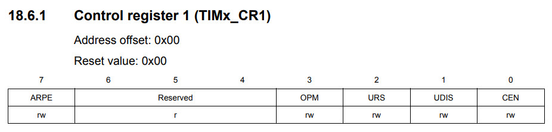

參考資訊：
https://programmer.group/stm8s-timer-basic-interrupt-timing.html
暫存器



.equ PB_ODR, 0x5005
.equ PB_IDR, 0x5006
.equ PB_DDR, 0x5007
.equ PB_CR1, 0x5008
.equ PB_CR2, 0x5009
.equ TIM2_CR1, 0x5300
.equ TIM2_IER, 0x5303
.equ TIM2_SR1, 0x5304
.equ TIM2_PSCR, 0x530e
.equ TIM2_ARRH, 0x530f
.equ TIM2_ARRL, 0x5310
.equ TIM2_CNTRH, 0x530c
.equ TIM2_CNTRL, 0x530d
.area data
.area sseg
.area home
int main
int 0
int 0
int 0
int 0
int 0
int 0
int 0
int 0
int 0
int 0
int 0
int 0
int 0
int 0
int timer2_handler
.area cseg
main:
mov PB_DDR, #0x20
mov PB_CR1, #0x20
mov TIM2_PSCR, #0x00
mov TIM2_ARRH, #0xff
mov TIM2_ARRL, #0xff
mov TIM2_CNTRH, #0x00
mov TIM2_CNTRL, #0x00
mov TIM2_IER, #0x01
mov TIM2_SR1, #0x01
mov TIM2_CR1, #0x81
rim
loop:
jp loop
timer2_handler:
mov TIM2_SR1, #0
bcpl PB_ODR, #5
iret
完成